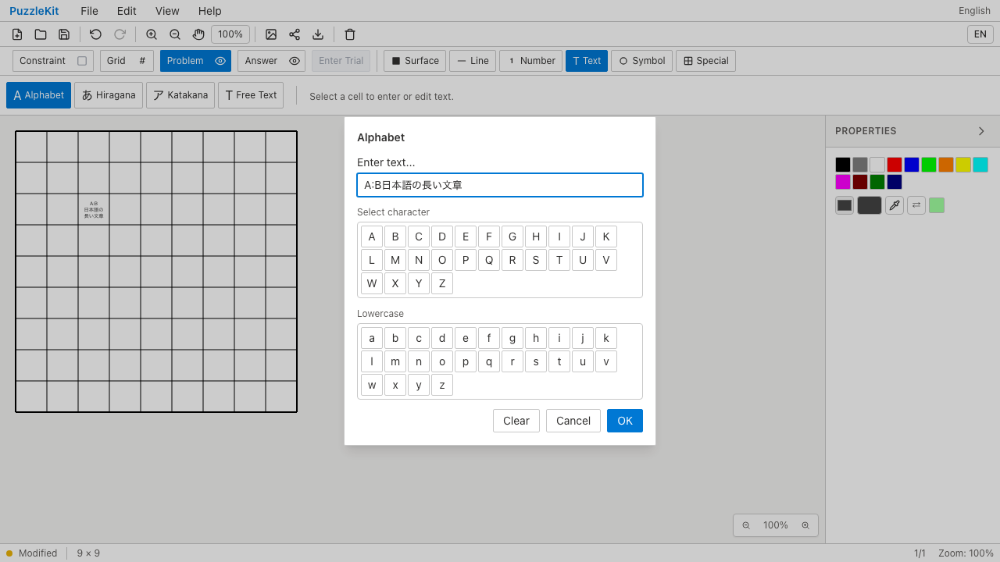
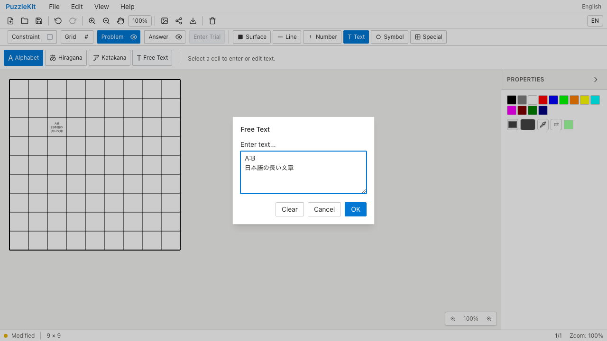
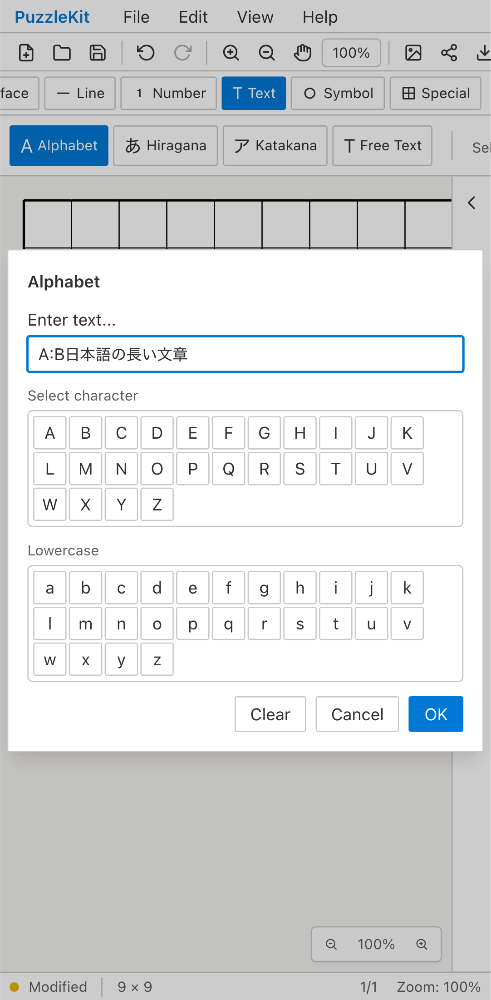
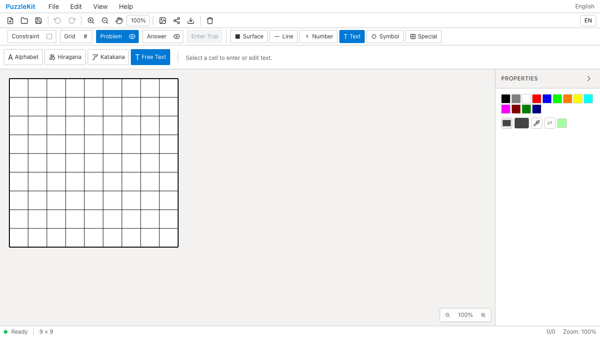
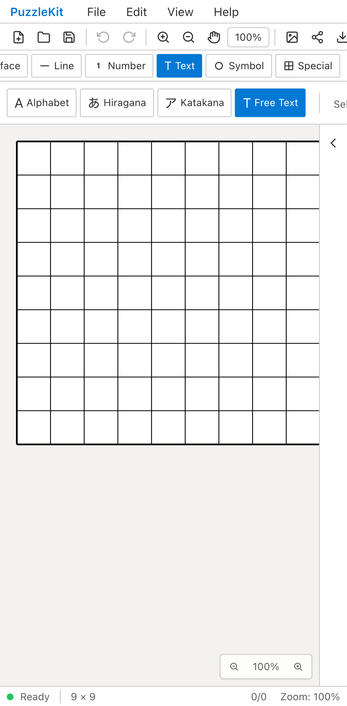
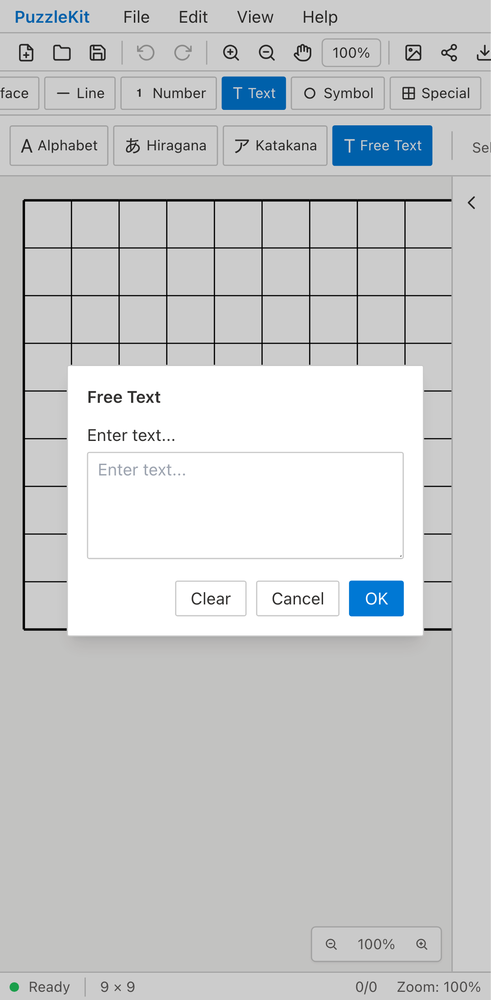
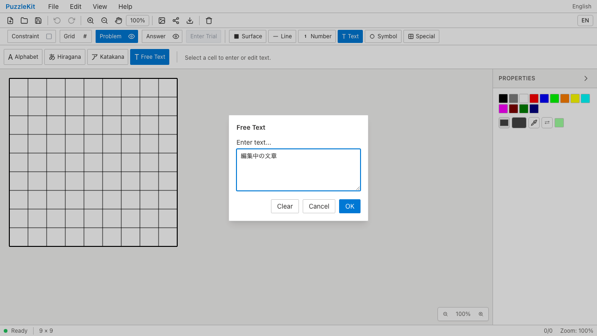
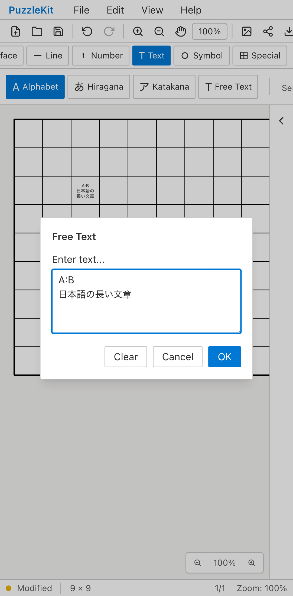
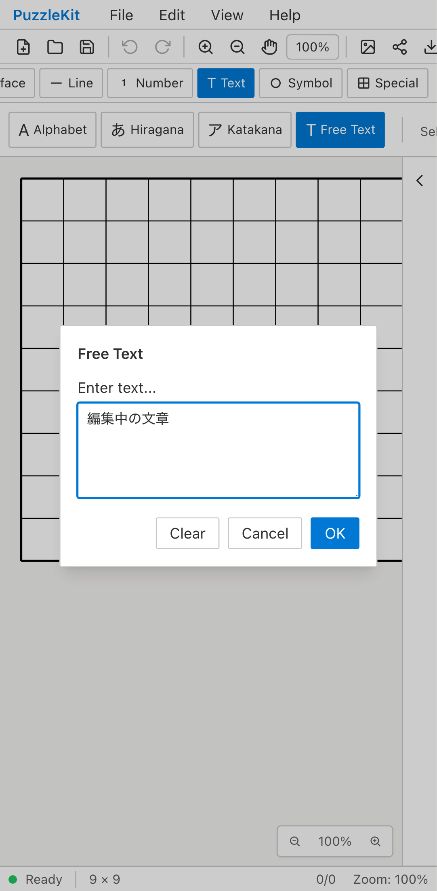
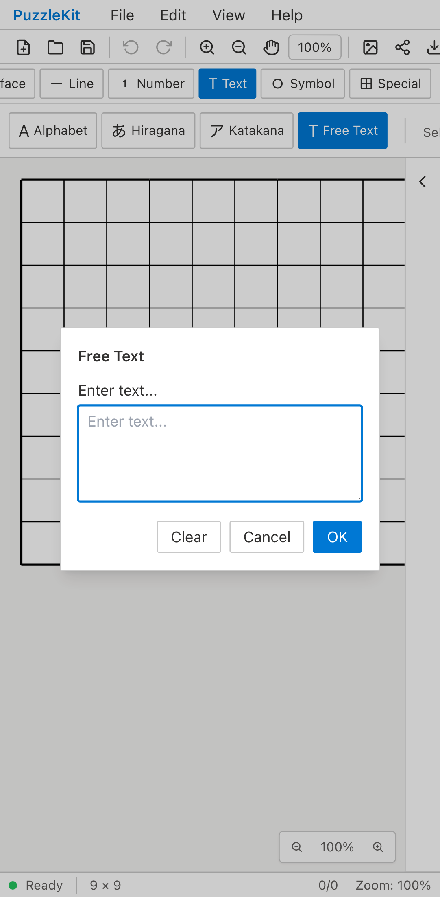

before — chromium

2b3407a1b97cba6aa59f2f94a8a349854975658d · 22.60sChromium PC／Pixel 7エミュレーション。Beforeは対象不具合による期待された失敗、AfterとProductionは成功です。タップ専用ケースはtouchscreen.tap、文字種切替・IMEケースは両画面幅でマウスクリックを使い分けます。IMEはCompositionEvent/KeyboardEventの契約試験で、OSネイティブIMEの実操作ではありません。

2b3407a1b97cba6aa59f2f94a8a349854975658d · 22.60s
f0ba9e9a26d7e2f40cc97955b4d025064041d7a8 · 14.44s
2b3407a1b97cba6aa59f2f94a8a349854975658d · 22.64s f0ba9e9a26d7e2f40cc97955b4d025064041d7a8 · 15.20s
f0ba9e9a26d7e2f40cc97955b4d025064041d7a8 · 15.20s
2b3407a1b97cba6aa59f2f94a8a349854975658d · 16.72s f0ba9e9a26d7e2f40cc97955b4d025064041d7a8 · 5.28s
f0ba9e9a26d7e2f40cc97955b4d025064041d7a8 · 5.28s 2b3407a1b97cba6aa59f2f94a8a349854975658d · 16.36s
2b3407a1b97cba6aa59f2f94a8a349854975658d · 16.36s f0ba9e9a26d7e2f40cc97955b4d025064041d7a8 · 5.08s
f0ba9e9a26d7e2f40cc97955b4d025064041d7a8 · 5.08s
2b3407a1b97cba6aa59f2f94a8a349854975658d · 16.48s
f0ba9e9a26d7e2f40cc97955b4d025064041d7a8 · 6.92s
f0ba9e9a26d7e2f40cc97955b4d025064041d7a8 · 4.28s
f0ba9e9a26d7e2f40cc97955b4d025064041d7a8 · 10.80s
f0ba9e9a26d7e2f40cc97955b4d025064041d7a8 · 4.12s
f0ba9e9a26d7e2f40cc97955b4d025064041d7a8 · 4.84s